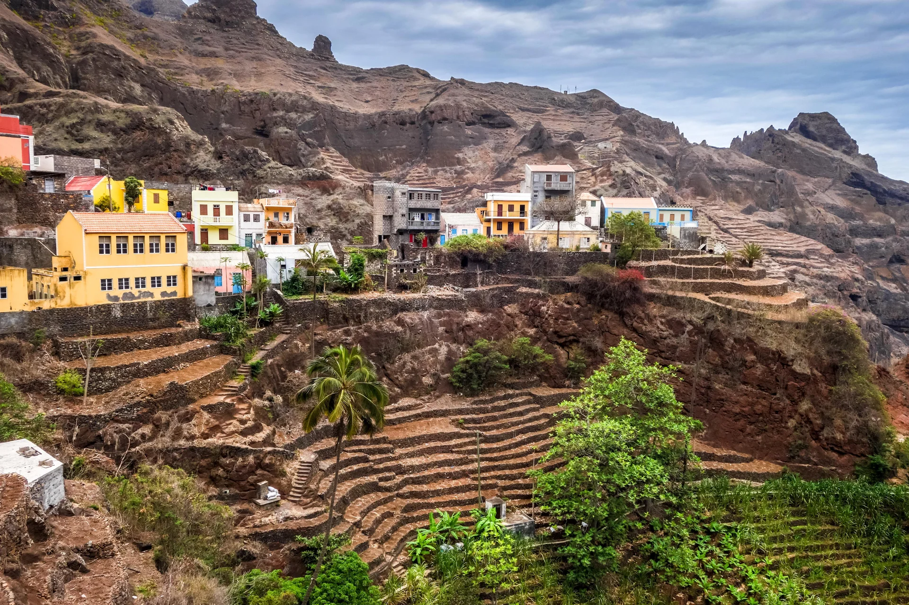
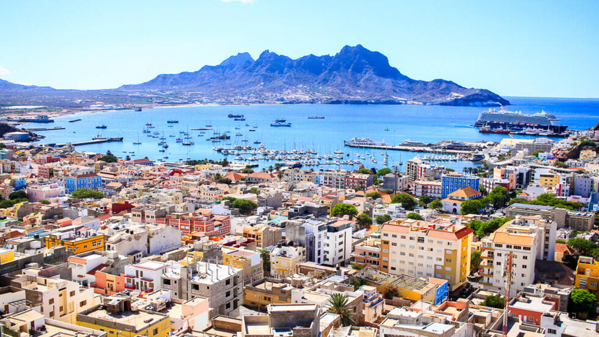
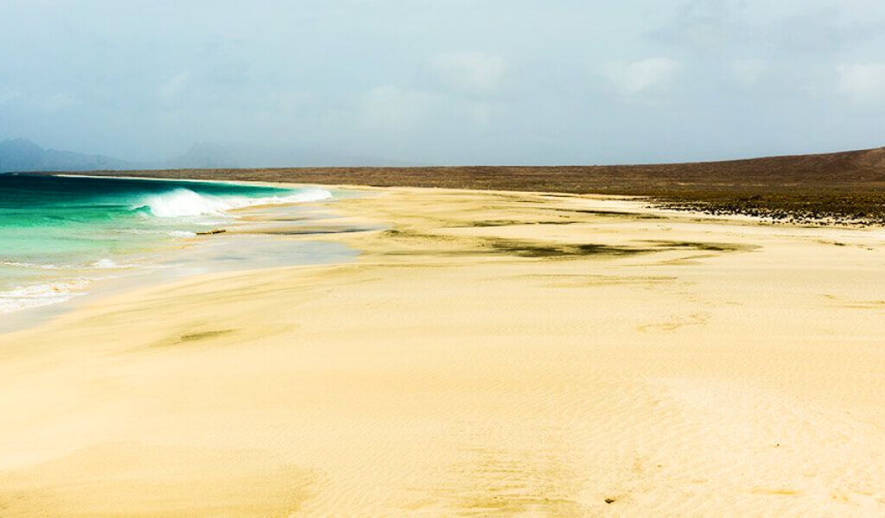
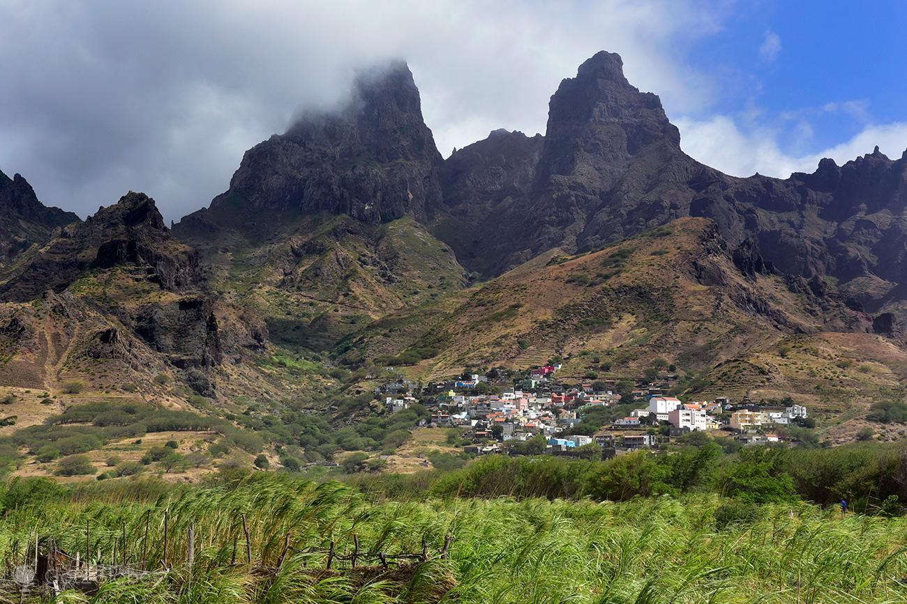
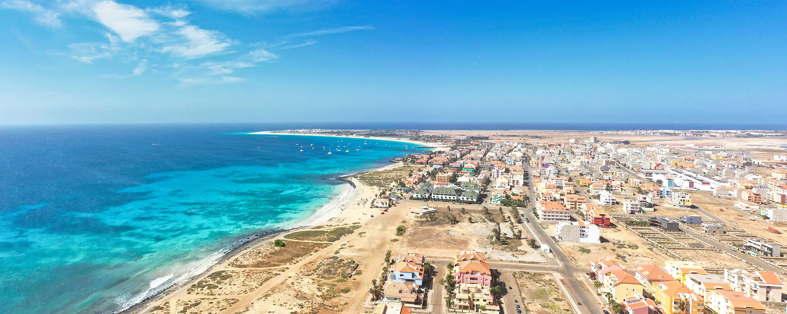
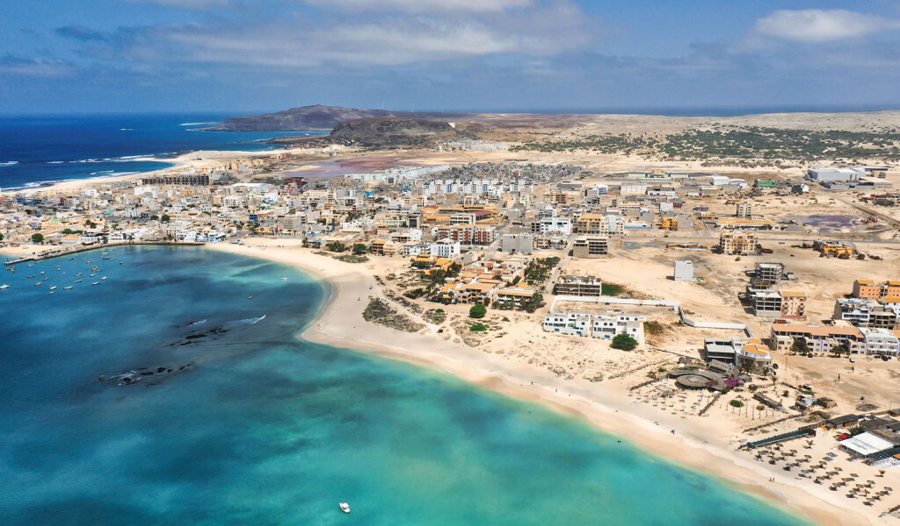
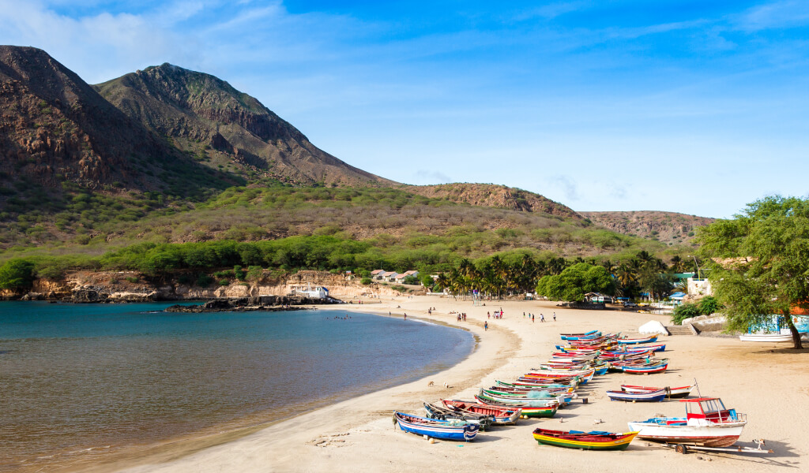
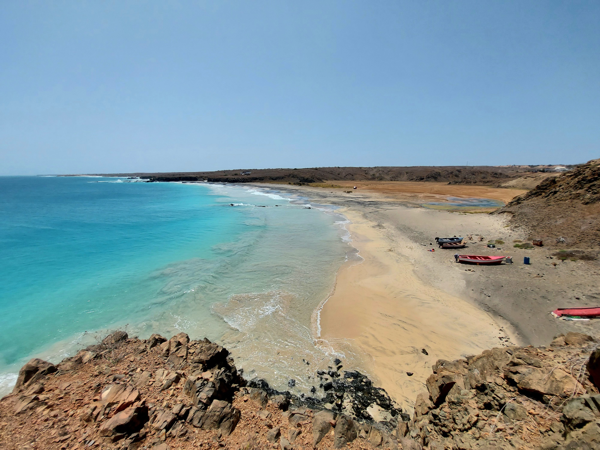
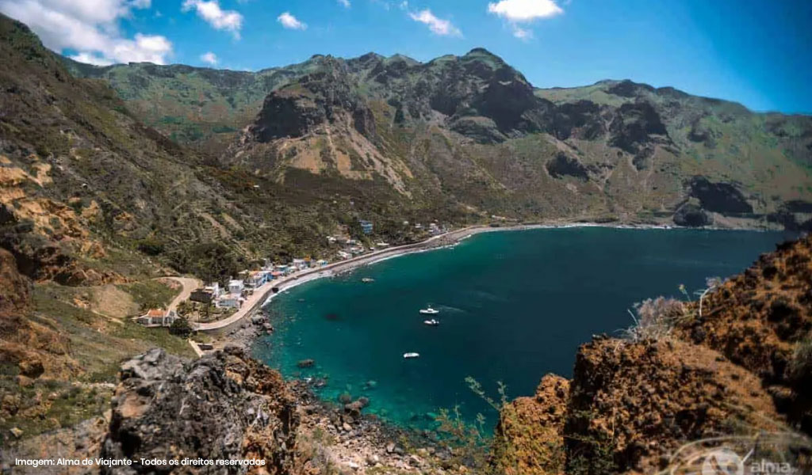

Grupos
Dentro deste arquipélago, existem 2 grupos
Barlavento
Deste grupo fazem parte as ilhas: Santo Antão, São Vicente, Santa Luzia,
São Nicolau, Sal e Boa Vista.
Como tal, faremos uma pequena
descrição de cada ilha.
Ilha de Santo Antão

É uma das 9 ilhas habitadas de Cabo Verde, localizado no grupo do
Barlavento
É a segunda maior ilha do arquipélago e a terceira maior
a nível populacional.
Tem aproximadamente 20 km de largura e 40 km de extensão. É uma ilha de
origem vulcânica, e é considerado o ponto mais ocidental africano.
Em 1462 foi descoberta por Portugal, começou a ser colonizada, com pouco
sucesso em 1548.
Durante muito tempo, considerou-se que a cadeia
montanhosa que divide a ilha de norte a sul, era intransponível.
Os principais aglomerados populacionais são:
- Ponta do Sol, onde se localiza o aeródromo da ilha, que atualmente se encontra desabitado;
- Vila da Ribeira Grande, Porto Novo, onde se encontra a porta de entrada de pessoas e mercadorias vindas de São Vicente.
Ilha de São Vicente

É a segunda ilha mais populosa de Cabo Verde, localizada no grupo do
Barlavento.
O canal de São Vicente separa a ilha de Santo Antão.
O principal centro urbano da ilha situa-se a sul da ilha, pois é onde
está localizado o Aeroporto Internacional Cesária Évora, na cidade de
Mindelo.
Na cidade de Mindelo, encontra-se a maior parte da população, que no
total conta com 74.136 habitantes
Esta ilha é famosa, pois é onde se realiza o célebre
FESTIVAL INTERNACIONAL DE MÚSICA DE BAÍA DAS GATAS.
Este evento é realizado no primeiro fim-de-semana de lua cheia do mês de
agosto.
É uma ilha bastante conhecida, também por ser a terra natal da cantora
Cesária Évora.
Ilha de Santa Luzia

Santa Luzia é mais uma das ilhas deste arquipélago, pertence ao grupo
Barlavento.
Atualmente, é uma ilha desabitada, mas já albergou um grupo de
agricultores no séc. XVIII.
A ilha de Santa Luzia e os seus ilhéus adjacentes (Branco e Raso)
constituem uma reserva natural.
É a única ilha deste arquipélago que apresenta o nome de uma santa.
Ilha de São Nicolau

Esta ilha pertence ao grupo do Barlavento do arquipélago.
É uma ilha montanhosa, que sobrevive muito à base da agricultura.
Foi povoada pela primeira vez no século XVI. Por ser uma ilha
montanhosa, é conhecida pela suas cadeias montanhosas e pela sua
principal vila, Ribeira Brava.
Para além da língua portuguesa e do crioulo cabo-verdiano, que é o
utilizado no dia-a-dia pela maior parte da população, existe também uma
outra vertente de crioulo, na qual a ilha se chama
Saninclau.
Ilha do Sal

Sal é uma ilha do grupo do Barlavento de Cabo Verde e concelho do mesmo
nome.
É uma das menores ilhas habitadas, estendendo-se por 30 km de
comprimento e 12 km de largura,no sentido leste-oeste e distante cerca
de 50 km em linha reta da Boa Vista, sua mais próxima vizinha.
O concelho do Sal é constituído apenas por uma freguesia: Nossa Senhora
das Dores.
O Sal deve o seu nome ao mineral que abunda na ilha, pequena, plana,
árida e com um toque de paisagem lunar.
Há muito que as praias de areia branca, o clima tropical seco e as águas
quentes e transparentes, conquistaram os turistas que chegam um pouco de
todo o mundo à procura de sol e descanso.
Ilha da Boa Vista

Boavista é uma ilha do grupo do Barlavento de Cabo Verde.
É, de todo o arquipélago de Cabo Verde, a ilha que está mais próxima do
continente Africano.
As praias da Boa Vista, intactas e com condições perfeitas para a
prática de desportos como diving, kitesurf, windsurf e mergulho, são
consideradas entre as mais bonitas de África.
A Ilha da Boa Vista é a terceira maior ilha de Cabo Verde e um dos
principais destinos turísticos, condição proporcionada pelas extensas
praias de areia branca, o mar calmo e os seus recortes paisagísticos de
sonho.
Sotavento
Deste grupo, fazem parte todas as outras, sendo elas: Santiago, Maio, Fogo e Brava. Passemos então, a uma pequena descrição destas ilhas.
Ilha de Santiago

É a maior ilha do arquipélago de Cabo Verde, e pertence ao grupo do
Sotavento.
Tem, de extensão, 75 km (sentido norte-sul) e de largura, 35 km (sentido
leste-oeeste). Em linha reta, direcionado a oeste, apresenta uma
distância de 50 km e 25 km da ilha de Maio, a leste.
Administrativamente, está dividida em 9 concelhos. A cidade da Praia, é
a capital, mas ao mesmo é a cidade mais populosa.
Desde a sua independência, em 1975, a ilha de Santiagoe e a cidade da
Praia, apresentaram um grande desenvolvimento, tendo a sua população
duplicado nesse ano.
A ilha dispõe do Aeroporto Internacional da Praia, com uma pista de
2.100 m de comprimento. Apresenta-se apenas 3 km do centro da cidade,
este aeroporto recebe voos internacionais vindos da Europa (Lisboa,
Paris, Amsterdão, Munique), da América do Sul (Fortaleza, Brasil), da
América do Norte (Boston) e do próprio continente africano.
Antes chamada de Cidade Velha, a agora Ribeira Grande de Santiago, foi a
primeira capital de Cabo Verde.
A cerca de 50 km para norte da Cidade da Praia, temos a cidade de
Assomada, onde temos o seu famoso e concorrido mercado e o Museu de
Tabanka.
Ainda a norte, a 75 km da Priai, temos a Vila do Tarrafal, conhecida
pelas suas praias de areia clara e palmeiras.
A variante de crioulo, falada nesta ilha, é chamada de
badiu, termo este que também é utilizado para designar
alguém que é natural desta ilha.
Ilha de Maio

Maio é uma ilha do grupo Sotavento de Cabo Verde.
Maio é a única ilha de Cabo Verde direcionada para o turismo de sol e
praia que escapou a um desenvolvimento intensivo.
Esse facto apresenta uma grande oportunidade para a ilha e para a
população permitindo aproveitar os seus recursos endógenos, sejam
naturais, históricos ou culturais, e também para desenvolver uma oferta
turística baseada nas comunidades locais e nas zonas da ilha
classificadas como Áreas Protegidas.
Ilha do Fogo

Foi uma das primeiras ilhas deste arquipélago a ser povoada.
É uma ilha de origem vulcânica e é a mais saliente do grupo, devido à
altitude do seu vulcão, Pico do Fogo.
Este vulcão tem estado historicamente ativo, tendo sido a sua última
erupção a 23 de novembro de 2014. Apresenta uma cratera de 9 km de
extensão e 1 km de altura.
Ilha de Brava

Esta ilha pertence ao grupo Sotavento deste arquipélago. A sua maior
população está localizada na Vila Nova de Sintra, com cerca de 7 mil
habitantes.
Com apenas 67 km quadrados, esta é a menor ilha habitada deste
arquipélago. No entanto, tem uma escola, um liceu, uma igreja e uma
praça, a praça Eugénio Tavares.
Esta é a única ilha que tem no seu nome um adjetivo. As outras
apresentam nomes de coisas (Fogo, Maio, Sal...) e as restantes nomes de
santos.